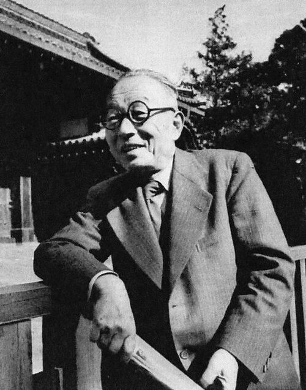

Who Was Watsuji Tetsurō?
Watsuji Tetsurō (1889–1960) was a Japanese philosopher, ethicist, cultural historian, and scholar of Japanese intellectual history. He is particularly known for developing an influential approach to ethics that places human beings within networks of relationships rather than treating the individual as an isolated self.
Watsuji's philosophy connects ethics with culture, society, history, environment, and human relationships. His most distinctive ideas include aidagara, often translated as "betweenness," and fūdo, a concept concerning the environmental and cultural milieu in which human beings live.
His work brought together Japanese intellectual traditions and engagement with Western philosophy. He studied thinkers including Nietzsche, Kierkegaard, and Heidegger while also investigating Buddhism, Japanese culture, ethics, and the history of Japanese thought.
Watsuji Tetsurō: Quick Facts
- Full name — Watsuji Tetsurō
- Japanese name — 和辻哲郎
- Born — March 1, 1889
- Died — December 26, 1960
- Born in — Himeji, Hyōgo Prefecture, Japan
- Known for — Ethics, cultural history, Japanese philosophy, and philosophical anthropology
- Major concepts — Aidagara, ningen, fūdo, relationality, and betweenness
- Major work — Rinrigaku (Ethics)
- Another major work — Fūdo (Climate and Culture)
- Philosophical interests — Ethics, culture, religion, history, human existence, and Japanese thought
Watsuji Tetsurō's Early Life and Education

Watsuji was born in 1889 in what is now Himeji City in Hyōgo Prefecture, Japan. His father was a physician, and Watsuji developed an early interest in literature as well as philosophy.
He studied at the First Higher School in Tokyo before entering Tokyo Imperial University, where he specialized in philosophy. During his early intellectual career he wrote about Western philosophers including Friedrich Nietzsche and Søren Kierkegaard.
His interests gradually expanded toward Japanese culture, Buddhist thought, ancient Japanese history, aesthetics, and the history of Japanese ethical ideas. This combination of Western philosophy and Japanese intellectual history became an important feature of his mature philosophy.
Why Is Watsuji Tetsurō Important in Japanese Philosophy?
Watsuji is regarded as one of the major philosophers of modern Japanese thought. His importance comes especially from his attempt to construct an account of ethics in which human existence is fundamentally relational.
Rather than beginning with an isolated individual, Watsuji asks how people exist within families, communities, institutions, cultures, historical traditions, and environments.
His philosophy therefore connects questions usually treated separately: What is a human being? How should people live together? How does culture shape human existence? And how does the environment participate in the formation of human life?
What Is Watsuji Tetsurō's Philosophy of Ethics?
Watsuji's ethics is one of the central achievements of his philosophy. He argued that ethics cannot be adequately understood by treating human beings as completely independent individuals.
Human beings are simultaneously individuals and members of communities. Our lives are shaped by relationships with other people, social institutions, historical traditions, and the environments in which we live.
For Watsuji, ethics therefore concerns the ways human beings relate to one another. Ethical life involves relationships, obligations, social practices, and the possibility of both separation and connection between people.
This relational approach distinguishes Watsuji's ethics from ethical theories that begin primarily with an autonomous individual making independent moral choices.
What Is Aidagara in Watsuji's Philosophy?
Aidagara is one of the most important concepts in Watsuji's philosophy. It is commonly translated as "betweenness" and refers to the relational dimension of human existence.
Watsuji argues that human beings do not first exist as completely isolated selves and only later enter relationships. Human existence is already structured through relationships with others.
Family relationships, friendship, social membership, cultural traditions, and other forms of interaction all contribute to the relational world in which a person exists.
Aidagara therefore helps explain why Watsuji's ethics focuses on the "between" rather than only on the isolated individual.
What Does Ningen Mean in Watsuji's Philosophy?
The Japanese term ningen is central to Watsuji's philosophical anthropology. The term can refer to the human being or human existence, but Watsuji develops its meaning in connection with the relational character of human life.
For Watsuji, the human being should not be understood simply as an isolated biological or psychological individual. Human existence is simultaneously individual and social.
This dual character is essential to his ethics. A person has an individual dimension, but also exists as a member of families, communities, institutions, and broader social formations.
Watsuji Tetsurō on Human Relationality
Human relationality is arguably the central theme connecting Watsuji's ethics, anthropology, and philosophy of culture.
A person is formed through relationships and does not exist outside every social and cultural context. Language, customs, institutions, family relationships, and historical traditions all influence the ways people understand themselves and others.
Watsuji's approach therefore treats social connection not merely as something added to human existence but as part of what it means to be human.
Watsuji on the Individual and Community
Watsuji's ethics attempts to avoid reducing human beings either to isolated individuals or to completely absorbed members of a collective.
Human beings have an individual dimension and a social dimension. The ethical problem arises within the dynamic relationship between these dimensions.
This means that individuality and community should not simply be treated as absolute opposites. Human existence involves movement between separation and connection, independence and belonging.
What Is Fūdo? Watsuji's Philosophy of Climate and Culture
Fūdo is another major concept in Watsuji's philosophy. It is often translated as "climate," but the concept is broader than weather or atmospheric conditions alone.
Watsuji uses fūdo to discuss the relationship between human beings and their environmental and cultural milieu. Geography, climate, landscape, patterns of settlement, food, clothing, architecture, customs, and ways of life can all be considered in relation to the human environment.
The concept therefore challenges a simple separation between human culture and the natural environment. Human beings live within environments and develop cultural forms in relation to them.
Watsuji's Climate and Culture Theory
Watsuji's Fūdo, often translated as Climate and Culture, examines how environmental conditions and human cultural life are interconnected.
His argument is not simply that climate mechanically determines culture. Rather, human beings exist within a particular milieu and develop ways of living, building, eating, dressing, working, and organizing society within that environment.
This makes fūdo important not only for environmental philosophy but also for philosophical anthropology and the philosophy of culture.
Watsuji Tetsurō and Martin Heidegger
Watsuji's philosophy developed partly through engagement with Martin Heidegger, especially Heidegger's Being and Time.
Watsuji appreciated Heidegger's analysis of human existence but believed that Heidegger placed insufficient emphasis on spatiality in comparison with temporality.
Watsuji's response was to emphasize the environmental and relational dimensions of human existence. His concept of fūdo highlights the spatial and environmental conditions in which human life unfolds.
This dialogue with Heidegger became an important part of the development of Watsuji's distinctive philosophical anthropology.
Watsuji Tetsurō and Japanese Philosophy
Watsuji occupies an important position in modern Japanese philosophy. His work combined engagement with Western philosophy with detailed studies of Japanese culture, Buddhism, history, and ethical thought.
He also studied Japanese intellectual figures and traditions, including Dōgen and Buddhist thought. His historical and cultural research became an important part of his philosophical project.
Watsuji is sometimes discussed alongside the Kyoto School, particularly because of his engagement with Nishida Kitarō and shared interest in Buddhist and Western philosophical questions. However, he developed a distinctive philosophical system and should not simply be treated as identical to the Kyoto School.
Watsuji Tetsurō and Buddhist Philosophy
Buddhist thought played an important role in Watsuji's intellectual development and philosophical investigations.
His engagement with Buddhist ideas contributed to his interest in concepts such as emptiness, relational existence, and the rejection of a completely self-sufficient individual self.
Watsuji nevertheless developed his own philosophical vocabulary and used Buddhist thought alongside Western philosophy and Japanese cultural history in constructing his account of ethics.
Watsuji's Ethics as Philosophical Anthropology
Watsuji's ethics can also be understood as a form of philosophical anthropology because it begins with a question about what human beings are and how they exist.
His answer emphasizes that human beings are both individual and social. The human being exists within relationships and within a particular historical and environmental world.
Ethics therefore cannot be separated completely from anthropology. To understand how people ought to live together, Watsuji believes we must first understand the relational structure of human existence.
Important Books by Watsuji Tetsurō
Watsuji produced important works covering ethics, Japanese culture, religion, intellectual history, and the relationship between human beings and their environment.
- Rinrigaku (Ethics) — Watsuji's major systematic work on ethics and human relational existence.
- Fūdo — A major philosophical study of climate, environment, culture, and human existence.
- Nihon Rinri Shisō-shi — A major study of the history of Japanese ethical thought.
- Koji Junrei — A literary and cultural work concerning ancient temples and Japanese cultural heritage.
- Nihon Seishin-shi Kenkyū — Research into the history of Japanese intellectual and spiritual culture.
Watsuji Tetsurō's Main Philosophical Ideas
Aidagara — Betweenness
Human existence is fundamentally relational. People exist within networks of relationships rather than as completely isolated selves.
Ningen — Human Being
The human being is simultaneously individual and social. Human existence cannot be adequately understood by considering only one of these dimensions.
Fūdo — Climate and Milieu
Human beings live within environmental and cultural milieus that participate in shaping their ways of life.
Relational Ethics
Ethics concerns the ways people exist and act within relationships, communities, and social structures.
Individual and Community
Individuality and social belonging are interconnected dimensions of human existence rather than completely separate realities.
Culture and Human Existence
Human beings understand and express themselves through historical and cultural forms that develop within particular environments.
Why Watsuji's Ethics Matters Today
Watsuji's emphasis on relationality raises questions that remain relevant to contemporary ethics. Modern moral philosophy frequently asks how individual rights, personal autonomy, social obligations, community, and environmental responsibility should be balanced.
Watsuji's philosophy encourages us to examine the relationships and environments within which individual choices become possible.
His philosophy can therefore contribute to discussions of social ethics, environmental philosophy, community, cultural identity, and the relationship between individuals and institutions.
Watsuji Tetsurō and Environmental Philosophy
Watsuji's concept of fūdo has attracted attention in discussions of environmental philosophy because it challenges a simple division between human society and the natural environment.
Human beings are always situated somewhere. Their lives are affected by geography, climate, landscape, resources, built environments, and cultural practices.
This makes Watsuji's philosophy useful for asking how human beings understand themselves as participants within environmental and social systems rather than as completely detached observers of nature.
Criticism of Watsuji Tetsurō's Philosophy
Watsuji's philosophy has also been subjected to serious criticism, particularly concerning his writings on Japanese culture, the state, and national morality.
His attempts to describe Japanese ethical traditions and national identity have been examined in light of the political environment of prewar and wartime Japan.
This historical context is important when studying Watsuji because his philosophical writings cannot always be separated from the political and cultural debates in which they were produced.
Recognizing these criticisms does not erase his philosophical contribution. Instead, it allows his work to be studied more accurately and critically.
Was Watsuji Tetsurō Part of the Kyoto School?
Watsuji is often discussed in connection with the Kyoto School of Japanese philosophy, particularly because of his intellectual relationship with Nishida Kitarō and his engagement with Buddhist and Western philosophical ideas.
However, it is more accurate to describe Watsuji as a distinctive modern Japanese philosopher who was closely connected with the intellectual environment surrounding the Kyoto School rather than simply treating his philosophy as identical to that of the school.
His strongest distinctive contribution was his systematic account of ethics, relationality, human existence, and culture.
Watsuji Tetsurō's Philosophy Explained Simply
Watsuji's philosophy can be understood through a simple question: Can we understand a human being without understanding the relationships and environment in which that person lives?
Watsuji's answer is essentially no. Human beings are individuals, but they are also members of families, communities, cultures, and historical worlds.
- Aidagara: The relational "between" in which human beings exist.
- Ningen: Human existence understood as both individual and social.
- Fūdo: The environmental and cultural milieu in which human life unfolds.
- Ethics: The study of how human beings exist and act in relation to one another.
- Culture: A historical form of human life that develops within particular social and environmental conditions.
Watsuji Tetsurō's Legacy in Japanese Philosophy
Watsuji remains an important figure in the study of modern Japanese ethics and philosophy. His work challenged approaches that begin with an isolated individual and instead emphasized the relational structure of human existence.
His concepts of aidagara, ningen, and fūdo have also provided philosophical vocabulary for discussing relationships, culture, environment, and human identity.
His legacy therefore extends beyond Japanese ethics. Watsuji's philosophy contributes to broader discussions about philosophical anthropology, environmental thought, social philosophy, and the relationship between human beings and their cultural worlds.
Frequently Asked Questions About Watsuji Tetsurō
Who was Watsuji Tetsurō?
Watsuji Tetsurō was a Japanese philosopher and ethicist who lived from 1889 to 1960. He is particularly known for his philosophy of ethics, human relationality, culture, and environment.
What is Watsuji Tetsurō famous for?
Watsuji is best known for his systematic ethics and concepts such as aidagara, ningen, and fūdo, as well as his studies of Japanese culture and intellectual history.
What is Watsuji's philosophy of ethics?
Watsuji's ethics understands human beings as relational beings. Ethical life takes place within relationships, communities, social structures, and historical contexts.
What does aidagara mean?
Aidagara is commonly translated as "betweenness." In Watsuji's philosophy it refers to the relational space or network of relationships in which human beings exist.
What does ningen mean in Watsuji's philosophy?
Ningen refers to the human being or human existence. Watsuji emphasizes that human existence has both an individual and a social dimension.
What is fūdo according to Watsuji?
Fūdo is often translated as "climate," but Watsuji uses it more broadly to describe the environmental and cultural milieu in which human life takes place.
What is Watsuji's Climate and Culture?
Fūdo, commonly translated as Climate and Culture, examines the relationship between human existence, environmental conditions, and cultural forms.
Was Watsuji influenced by Heidegger?
Yes. Watsuji engaged seriously with Heidegger's philosophy, particularly Being and Time. He criticized what he regarded as Heidegger's insufficient attention to spatiality and developed his own emphasis on environment and relational existence.
Was Watsuji part of the Kyoto School?
Watsuji was closely connected with the intellectual environment of the Kyoto School and Nishida Kitarō, but his philosophy developed in a distinctive direction and should not simply be equated with the Kyoto School.
Why is Watsuji important in Japanese philosophy?
Watsuji developed one of the most influential modern Japanese approaches to ethics, emphasizing that human beings are both individuals and members of relational, social, cultural, and environmental worlds.
Why is Watsuji's philosophy relevant today?
His emphasis on relationality, community, culture, and environment provides useful philosophical perspectives for contemporary discussions of social ethics and environmental philosophy.
Related Japanese and Asian Philosophers
Explore thinkers connected with Japanese philosophy, Buddhist thought, ethics, culture, and human relationality.
Related Areas of Philosophy
Watsuji's philosophy connects with ethics, social philosophy, philosophical anthropology, environmental philosophy, Japanese philosophy, Buddhist thought, and the philosophy of culture.
Why Watsuji Tetsurō Still Matters
Watsuji Tetsurō developed a distinctive philosophy in which ethics begins with the relational character of human existence. His concepts of aidagara, ningen, and fūdo challenge the idea that people can be understood adequately as isolated individuals.
His philosophy connects human relationships with culture, history, environment, and community, making his work an important contribution to modern Japanese ethics and philosophical anthropology.
Studying Watsuji also reveals an important feature of Japanese philosophy: the attempt to bring Western philosophical questions into dialogue with Japanese, Buddhist, and cultural traditions while developing concepts that do not simply reproduce Western categories.
Explore Great Philosophers